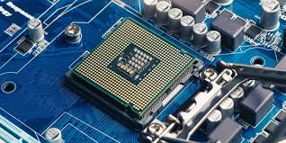
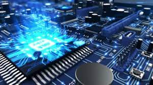

De fysieke laag van een computer bestaat uit verschillende essentiële componenten die samenwerken om de basisfunctionaliteit van een computer mogelijk te maken. Deze componenten omvatten de processor (CPU), het werkgeheugen (RAM) en het moederbord. Laten we eens kijken naar de functies en werkingen van elk van deze componenten:
Functie: De processor is het hart van de computer en is verantwoordelijk voor het uitvoeren van berekeningen en het aansturen van andere hardwarecomponenten.
Werking: De CPU haalt instructies uit het geheugen en voert ze uit. Dit omvat taken zoals rekenkundige bewerkingen, logische bewerkingen en het beheren van de instructiestroom van het besturingssysteem en softwaretoepassingen. Moderne processors hebben meerdere kernen (multi-core) om meerdere taken parallel uit te voeren, wat de algehele prestaties verbetert.
Functie: Het werkgeheugen, of RAM (Random Access Memory), slaat tijdelijk gegevens op die actief worden gebruikt door het besturingssysteem en softwaretoepassingen. Het zorgt voor snelle toegang tot gegevens en programma's tijdens het gebruik van de computer.
Werking: Wanneer een computer wordt ingeschakeld, laadt het besturingssysteem enkele essentiële gegevens in het RAM. Wanneer u software start, worden de benodigde gegevens vanaf de harde schijf naar het RAM gekopieerd voor snelle toegang. Dit maakt het mogelijk om snel tussen verschillende toepassingen te schakelen en efficiënt te werken. RAM is vluchtig, wat betekent dat de gegevens worden gewist wanneer de computer wordt uitgeschakeld.
Functie: Het moederbord is het centrale circuitbord waarop alle belangrijke hardwarecomponenten van de computer zijn aangesloten. Het fungeert als een schakelbord voor de gegevensstroom tussen de verschillende onderdelen van de computer.
Werking: Het moederbord bevat aansluitingen voor de CPU, RAM-modules, grafische kaart, harde schijven, optische drives, USB-poorten en andere hardwarecomponenten. Het bevat ook de chipset, die verantwoordelijk is voor het coördineren van gegevensuitwisseling tussen verschillende componenten. De BIOS (Basic Input/Output System) of UEFI (Unified Extensible Firmware Interface) is ook op het moederbord aanwezig en is verantwoordelijk voor het initialiseren van de hardware bij het opstarten van de computer.
